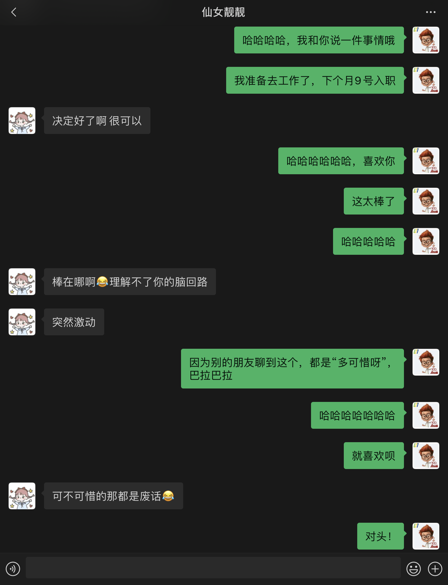

其实，我想写一篇名为“AboutChoice”的文章很久了。最初是因为春招时不可避免地需要拒一些Offer，后来，却阴差阳错地需要面对“读研还是工作”这个世纪难题。你永远不知道生活中一些事情的突然出现意味着什么，但每每反思，都有新的不同理解。
自身情况
去年，可能更多地是担心自己找不到什么好工作，因而打算读研深造一下自己。当时的那种选择，更多地像是“麻木”状态下做出的。当时的感觉就是毫无灵魂，厉害的同学都去名企工作了，而大部分同学更多地选择了读研深造。到我自己，则更有一种“高不成低不就”的感觉，无奈，选择考研。
于是，在2019年的三月开始，除了正常的课程之外，我还要准备考研的知识内容。那时的自己每天都是极其压抑的，总感觉一个担子一直压在自己身上，直直望去，却是更大的压力。那时，有一门课程，是《编译原理》。我非常喜欢这门课程，但校方给这门课程的课时安排并不多。老师留下的实验内容是分三周实现一个编译器前端，那时的我兴奋极了。但考虑到考研的担子，却又感觉好压抑。后来，干脆就豁出去了。我不是一个“并发性能”很好的人，我喜欢专心地做一件事。于是，那几周就一直研究如何实现编译器前端。那几周，暂时放下了其他的事情，认真地参考学习前人的实现，最终完成了这样的一个项目。那段时间，充实得令人兴奋。
但是，课程结束之后，还是回到考研的队伍之中。在去年的暑假时，很多一起学习的同学都得到了保研的名额。那时候，应该是我大学期间的至暗时刻了吧。我常常在傍晚夏热渐散时在操场一圈圈地走，正如找不到方向一般，思索自己的人生出路。那种落差让我常常打不起精神，更多地，应该是一种不甘与后悔吧。但没有办法，生活就是这样。然后，继续准备考研。实际上，我是在考前100天左右才算是投入状态，所谓的投入状态就是按照别人的样子，开始刷题复习。那时我最困惑的问题就是，读研的意义究竟是什么？
我不是一个喜欢科研的人，对于不感兴趣的内容，更是很难全心研究学习。我真的适合读研吗？我的一个同学，考研的目的，只是拿到“学位”。我自认为这样的理由不足以说服我投入两年左右的时间。后来，因为时间有限，就强迫自己不去思考这样的问题了。但我这个人就是这样，总是想要一个原因，所以那时的我，往往很难从内心做到平静。
后来，因为秋季的一些课程还是需要一些精力，加上毕业设计的开题事项等等，分散了很多读研时间。我是一个“慢热型选手”，因而复习的成果可想而知。我依旧还记得，考研的第一天结束之后，我和我的妈妈打电话，说自己考得太烂了，更多的是，怀疑自己还适合读书吗？很遗憾，我和妈妈说，我不想继续读书了。这是发自内心的感觉，是我在考英语时一种疲倦无力感冲上之后，心里余下的感受。妈妈听了很平静，“以后不后悔吗？”，“不后悔。”，“那好，早点睡吧。”。那时，却有种很宽慰的感觉，但这种感觉并不耽误我第二天完成了自我感觉十几年来数学考得最烂的一张试卷。
终于，时间挨到了二月。初试成绩公布，329分。按照窝工往年360分的计科录取线，这成绩无疑两字：凉凉。那时的自己更像是一种被逼上梁山的感觉，决心找工作了。当然，那时最难受的，还是自我怀疑，我的实力… 真的就只是这样了吧？
受到疫情的影响，学校的复试线却一直没有公布。当然，这样的初试成绩，可能已经不够支付我后续复试流程的门票了。后来，春招结束之后，拿到了自己想要的Offer，却被通知通过考研初试线了。很遗憾，春招的时候，更多的是一种不用读书的轻松感，每每遇到面试官问我：暂时不打算继续读研深造了吗？我的回答总是：我希望通过工作，将我本科期间所学的知识，从一种扁平化的状态变为一种立体感的应用。
可能我心智不太成熟？拿到了复试的机会，没有什么激动的感觉，却感觉很沉重。我不想读研，但读研机会难得。思考了几天，我和老师说我在犹豫是否要继续读研。老师却很意外，“这是多少人渴求的机会，读研是你们这个年纪最有性价比的选择了！你却还在犹豫？”。后来，我和老师单独聊了聊这件事情，老师还是劝我多考虑考虑，毕竟机会难得。于是，在这种犹豫之下，秉持着机会不能轻易放弃的原则，我还是参加了复试。
说实话，当时的我并没有过多地准备复试。只是翻看了几页《集合论与图论》的PPT。果然，不感兴趣的知识，再看起来还是乏味。我想说的，并不是说这门课程内容乏味，只是过于呆板机械地应付考试去学习“书中重点知识”，这种感觉我不喜欢。对于刚刚结束春招的我来说，这种感觉格外强烈。对于春招来说，面试时问到的内容，更多的是实际应用时需要的知识，我觉得这样的知识更需要个人的理解才可以回答得完美；但应试问题，我是真的打不起精神。
庆幸的是，因为疫情的原因，取消了原有的机试，考察形式均通过面试来进行。凭借着自己出色的面试经验，我和老师们聊了聊自己对专业知识的理解。最终，凭借复试超车，拿到了哈尔滨工业大学（深圳）计算机学院总分第五名的总成绩。拿到了学校给我的最理想Offer。同时，在准备复试阶段，自己还参加了一个提前联系的导师的面试，以七选二的比例入选该实验室。这样的努力结果，让我欣喜与沉醉，更给了自己很大的心理负担。
我说过，我不是一个很想要读书的人。所以面对这样的选择，自然是迟疑的。一边是我想要的工作岗位，但拿到的是普通Offer；一边是难得的深造机会，且拿到的是Super Offer。身边的家人，都很希望我能继续深造，因为“工作机会有的是”。但我却一直没能说服自己，还是在考量犹豫。
我的选择
从客观事实上来说，读研给我的好处应当是更多的。但致命的是，我不喜欢老师提供给我的大方向，并且这个方向就国内环境来说，存在着比较严重的内卷问题。同时，自己的兴趣在于工程开发，而非算法研究。对计算机专业来说，想要走工程开发的道路，往往更好的选择是通过工作来提升自己。
以上，就是我核心选择工作的原因。我深刻地明白我放弃了很多读研带来的好处，但我却更愿意接受工作给我的发展提升。做出这个选择之后，我立即和我的朋友们说明了一下，并和导师表达了自己的意愿。好在，导师没有多说什么，让我心理宽慰了不少。
其实，在纠结的过程中，我的妈妈和我说过，“你不用过多地顾虑别人的想法，你是凭借着自己的本事拿到了这两个选择，选择最适合自己的就好。”。这也是让我放下很多心理负担的重要原因。是的，这是我的人生，我会对自己的选择负责，我会认真对待自己的道路。
现在的我，依然不愿意和我身边的人聊自己的选择，因为总会收到他们的诧异和惋惜。或许是自己的实力，总是令人怀疑？果然以后需要放肆一点，不能继续低调了！于是，我慢慢熟悉了朋友们的惋惜，尽管还是会略有些失落。后来，让我印象深刻的，果然还是和自己欣赏喜欢的姑娘聊天:

写到这里，我发现自己似乎并不是真正地在面对两个选择犹豫，而是在等一个重要的人，对我的选择表示肯定。还好，我身边有我的亲人、朋友在支持着我，我需要的，还是我久违的自信吧！
一些想对读者说的话
未来，面对选择，可能还是会迟疑，但相信自己一定不会对做出的选择后悔。我会一直记得我的leader对我说的那句话：有选择是好事。每个人都有自己的评断，选择最适合自己的就好。“
我当时考虑的东西还是蛮多的，包括各个可能的角度吧。这总显得有些“磨叽”、“矫情”，但可能自己在思考的时候，心里就已经有了答案。我甚至和老师聊到一些很深入的问题，老师问我：“如果未来你的孩子也在迟疑是否读研，你缺少这一段研究生经历，该怎么给他建议呢？”。我被这个问题深深困住了，因为我的爸爸妈妈，对于此刻我的选择正是这样的无能为力（我并不是说我的父母没什么能力，相反，我明白他们已经把所能给我的全盘捧到我的面前。他们是我最坚实的后盾，是我永远的支持者）。所以，如果你也面对这样的困惑，可以试着从不同的角度去考量一下。如今，对于这个问题，我的答案是去做自己想做的事情，相信未来我也会鼓励自己的孩子，去坚持你想要坚持的。
总而言之，可能很多选择就是这样。无论你选择哪个，未来都很可能会后悔，那既然如此，为什么不放开心胸，勇敢选择一个自己想要的呢？我的朋友和我聊过一段很有意思的对话：
既然我们都明白，两条路，都是为了自己的成长发展。而成长发展，往往过程是痛苦的。既然都要面对痛苦，为什么不选择一条自己感兴趣的，硬磕下去呢？
如果有一天，自己真的对这个选择后悔，那恐怕那时的自己不是弱、就是贪。这二者，都是此刻的自己，非常不想面对的。愿未来，给我们最好的答复。
最后，希望自己可以把渴望已久的独自生活变得丰富多彩，去探索更多的可能。最重要的，是不矫情吧，哈哈哈哈哈哈哈哈哈哈哈哈哈哈！